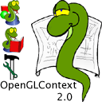

OpenGLContext 2.x
A Learning Environment for PyOpenGL and Python 2.x Overview
OpenGLContext is a testing and learning environment for
PyOpenGL. It
provides sample code for:
- Modern OpenGL Features (in a series of tutorials and example scripts)
- Shaders
- Vertex Buffer Objects
- Pixel Buffer Objects
- PyOpenGL Usage with Common GUI Libraries
- Pygame
- wxPython
- GLUT
- Qt (in the OpenGLContext_qt project, due to license restrictions)
- Rendering common scenegraph objects
- geometry
- point-sets
- line-sets
- face-sets
- polygonal text
- trimmed NURBs
- basic particle systems
- extruded shapes (via GLE)
- materials and textures
- mip-mapping
- multi-texturing
- loading from disk with PIL
- transforms
- incl. support for manually calculating
forward and reverse transformation matrices
- backgrounds
- solid-colour
- spherical
- image-cube
- lights
- glBlend-based (sorted) transparent-geometry rendering
- Color-id-rendered mouse selection and interaction
- Frustum culling
- hierarchic axis-aligned bounding boxes
- frustum extraction from the combined model-view matrix
- glStencilBuffer-based shadow rendering (defunct)
- Tessellating polygons
It also provides a number of generally useful features for the
beginning OpenGL programmer:
- Simple 3D navigation (camera manipulation, fly and examine modes)
- .obj loader (converts obj format files to VRML97 nodes)
- Optional VRML97 loader (the scenegraph engine is based loosely on VRML97)
- Timer mechanisms and simple event handling
- Interchangable context classes for multiple GUI libraries
OpenGLContext is the primary mechanism used to test the PyOpenGL distribution (all
non-trivial tests for PyOpenGL are defined and run as OpenGLContext
scripts). The source distribution's tests/ directory contains a script runalltests.py which executes the tests, captures their results and formats them into a results page.
See the documentation page for more details, or download and play with the code in the tests directory.